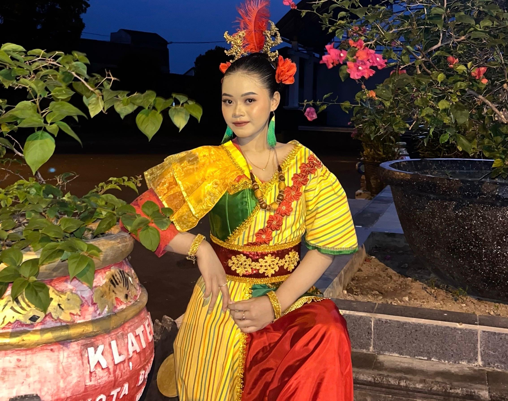
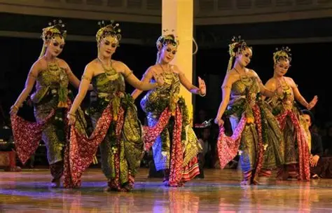
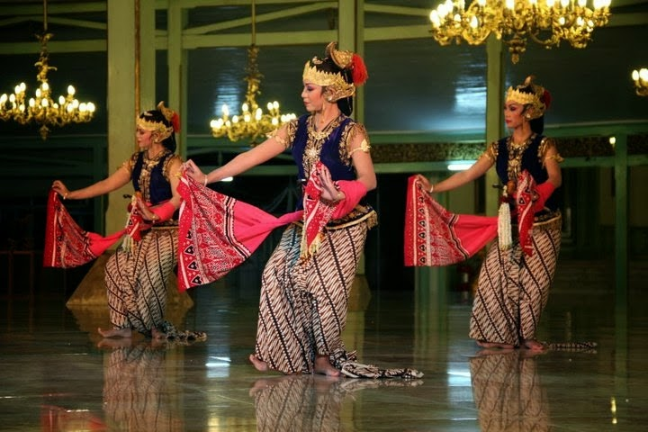
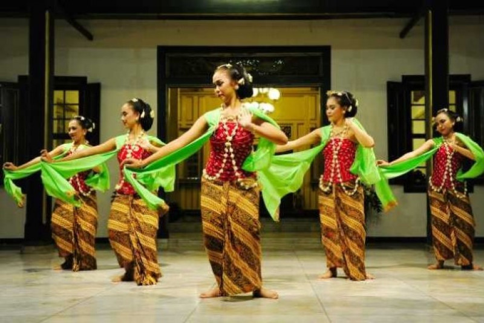

WARISAN BUDAYA JAWA
Tari Jawa merupakan warisan budaya yang penuh makna, keindahan, dan nilai luhur yang telah diwariskan secara turun-temurun.
MENGENAL LEBIH DALAM ✿
TENTANG TARI JAWA
Tari Jawa adalah salah satu bentuk seni tari tradisional yang berasal dari Pulau Jawa. Tari ini menonjolkan kehalusan gerak, ekspresi yang mendalam, serta sarat akan nilai filosofi dan budaya.
Setiap gerakan dalam tari Jawa memiliki makna dan menjadi bagian penting dari identitas budaya masyarakat Jawa.
MENGENAL TARI TRADISIONAL

Tari klasik yang dibawakan oleh sembilan penari wanita. Gerakannya lembut, teratur, dan penuh makna.
📍 Asal: Keraton Surakarta dan Yogyakarta
Tari klasik yang menggambarkan kelembutan, kesopanan, dan keanggunan dengan gerakan yang sangat halus.
📍 Asal: Keraton Yogyakarta
Tari yang memiliki gerakan lembut dan luwes, biasanya ditampilkan untuk menyambut tamu atau dalam acara budaya.
📍 Asal: Surakarta, Jawa TengahCIRI KHAS
Tari Jawa memiliki keunikan pada gerakan yang halus, iringan gamelan yang khas, busana yang anggun, serta makna filosofi di setiap geraknya.
Semua itu menjadikan Tari Jawa sebagai identitas budaya yang patut dilestarikan.
Gerakan dilakukan dengan lembut, gemulai, dan penuh penghayatan.
Diiringi musik gamelan yang khas dan bernuansa tradisional.
Menggunakan busana tradisional yang indah dan penuh makna.
Setiap gerakan memiliki filosofi kehidupan dan nilai luhur.